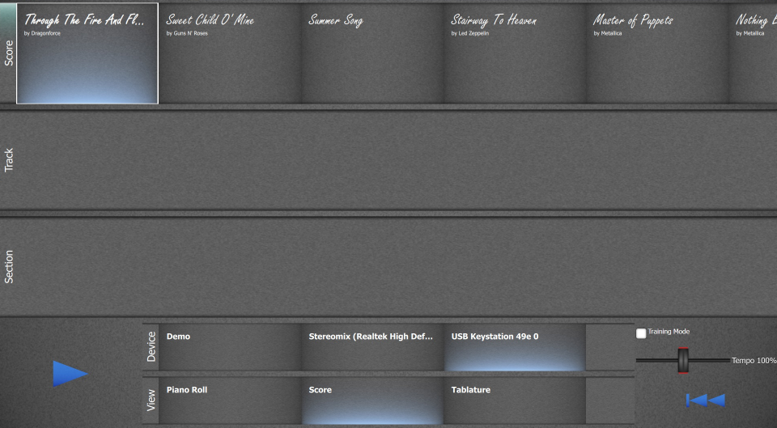
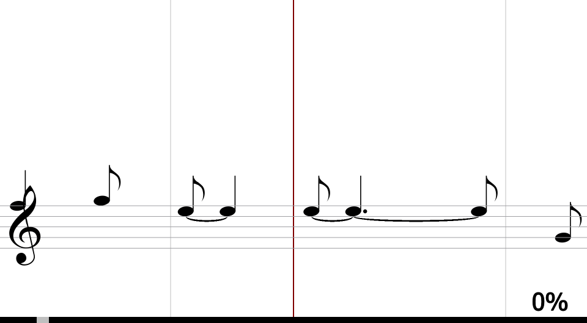

Beat the Score is a music game where you try to play a song as accurately as possible.
After clicking the start button in the menu you can choose the song, track and instrument you want to play.

In the top row you can select the song you wanna play. You can put your songs in the folder <?> and they will show up here.
Most songs contain multiple tracks. Here you can choose which one you want to play.
If you wanna start from a certain section of the song, you can select it in the list below.
Don't forget to choose your instrument from the available inputs! Available MIDI instruments and phone connectors will show up here.
Under the instrument selection you can choose how the notes should be displayed. You can choose between a pianoroll which will display the notes as rectangles, conventional music notation and a tablature for guitarists.
For trainings purposes you can change the tempo of the song and activate the Trainings mode where the game will pause at every note until you get it right.
